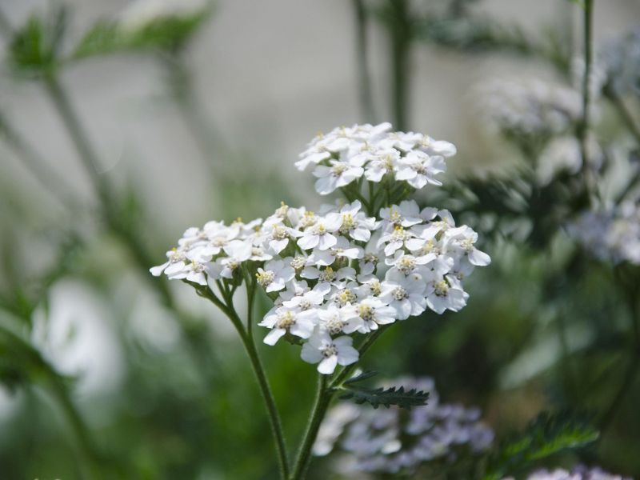
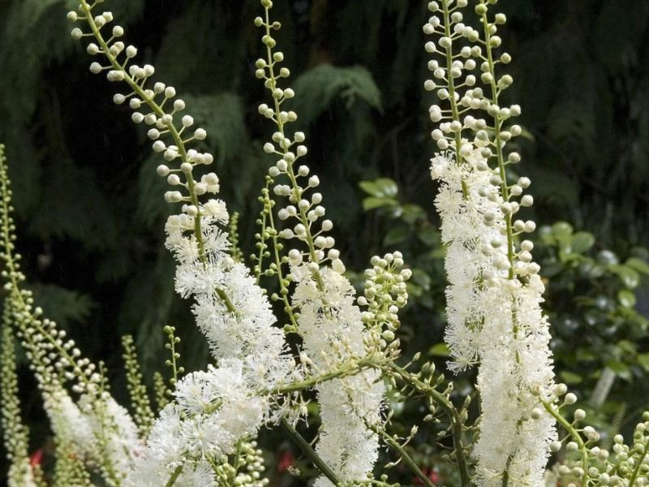

Yarrow
Achillea millefolium
Circulatory support
Digestive comfort
Skin & wound care
View Profile →

Black Cohosh
Actaea racemosa
Menopausal comfort
Emotional grounding
Muscle tension ease
View Profile →

Horse Chestnut
Aesculus hippocastanum
Circulatory wellness
Leg vitality
Tissue tone support
View Profile →

Garlic
Allium sativum
Traditional antimicrobial herb
Immune-supporting
Circulatory vitality
View Profile →